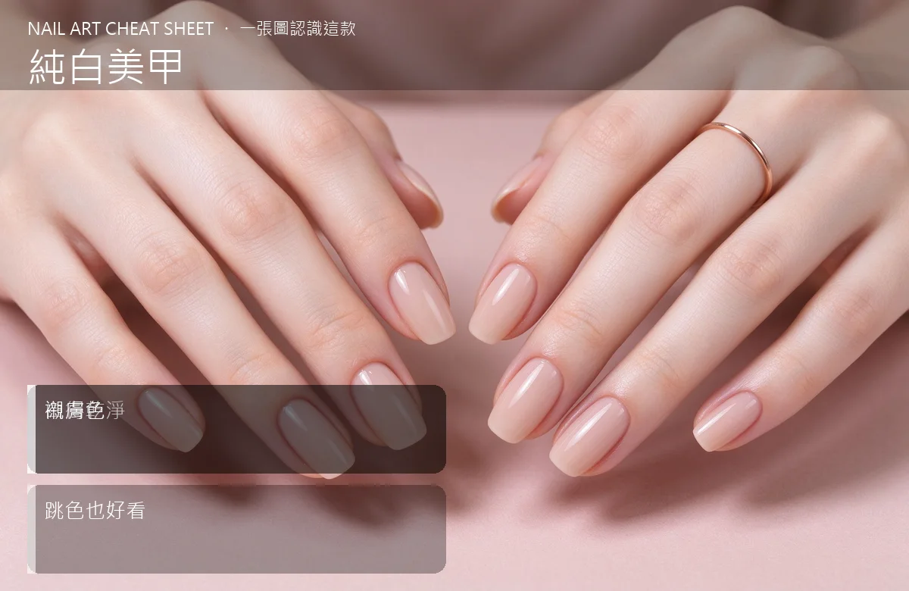

美甲純白美甲是什麼？入門入門攻略
純白美甲是『美甲界的白 T 恤』，看起來簡單，但做對了顯白又上鏡。
純白美甲原理與辨識重點：美甲師不說的白得乾淨
純白不是把指甲塗死白，那會像塑膠。好的純白是『奶白、雲白、帶一點暖或一點冷』的白，薄塗兩層均勻覆蓋，邊緣乾淨。它跟膚色的對比很強，手指會看起來特別白、特別修長。
誰適合做純白美甲？乾淨款對號入座
夏天穿涼鞋、短袖、白色系衣服的人；喜歡極簡風、韓系風的女生；要拍畢業照、形象照、婚紗側拍的人。
純白美甲美甲施作步驟：純白凝膠
前置做乾淨（指緣不能有死皮，否則白邊會很明顯）→ 薄上第一層白色照燈 → 再上第二層補勻（白色遮蓋差，通常要兩層）→ 檢查指尖和兩側有沒有漏色 → 亮面封層。
純白美甲優缺點分析：美甲持久度與傷甲評估
| 優點 | 說明 |
|---|---|
| 乾淨顯白、跟任何顏色的衣服都搭、拍照會反光很好看。 | 是日系流派的招牌，入門就能上手 |
| 缺點 | 說明 |
| 白色遮蓋力差，要塗兩到三層才均勻；指緣只要有一點黑、一點死皮就非常明顯；做家事容易染色。 | 前置與前置偷懶不推甘皮——純白會把指緣的髒污放大一百倍。做白色甲，指緣保養比顏色本身還重要。沒顧好會打折 |

純白美甲新手雷區：襯膚色與常見錯誤
注意：前置偷懶不推甘皮——純白會把指緣的髒污放大一百倍。做白色甲，指緣保養比顏色本身還重要。
純白美甲和其他美甲做法的差別比較
跟『法式白邊』不一樣：法式是透明底加白指尖，純白是整隻都是白。兩者氣味完全不同。
純白美甲美甲常見問題 FAQ
Q：黃皮做純白會不會更黑？ A：不會，白跟黃的對比反而會讓手看起來更乾淨。但要選『暖白』而不是『死白』，死白會顯得手灰。
Q：純白容易變黃嗎？ A：凝膠本身不會變黃，但如果抽菸、長期喝咖啡又常忘記擦底膠，白會慢慢偏黃。定期卸甲讓指甲休息就好。
Q：可以做霧面白嗎？ A：很適合，霧面白看起來像陶瓷，更有質感。